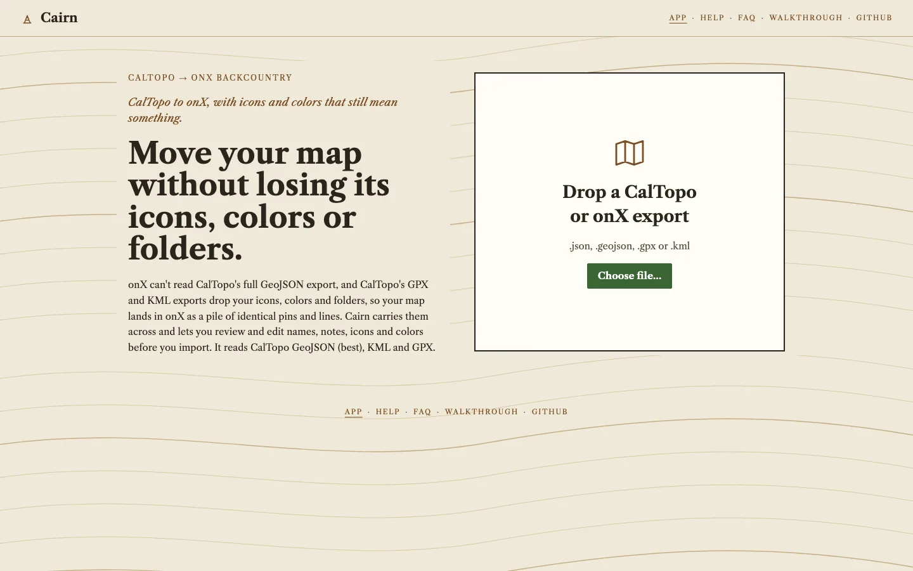
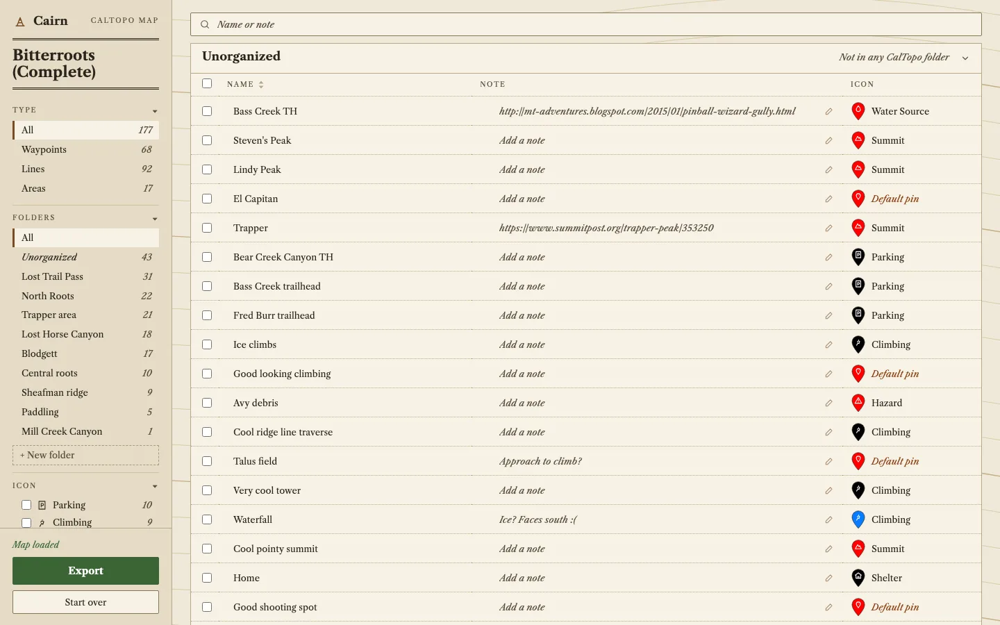
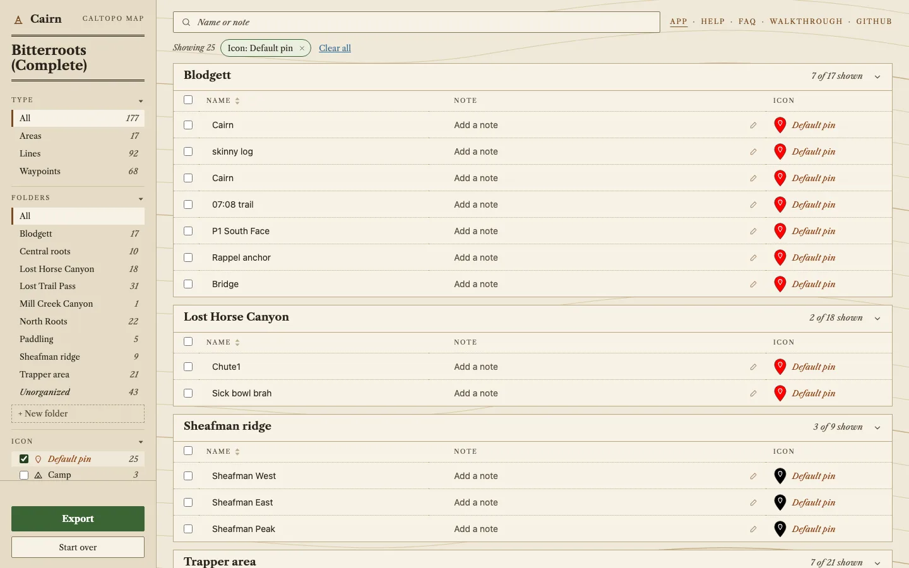
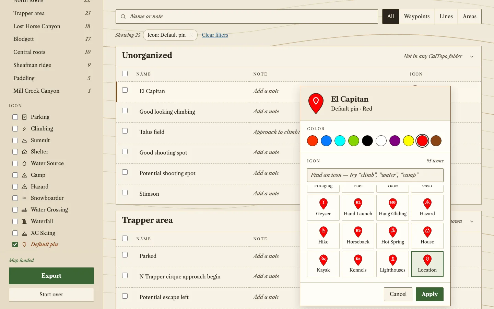
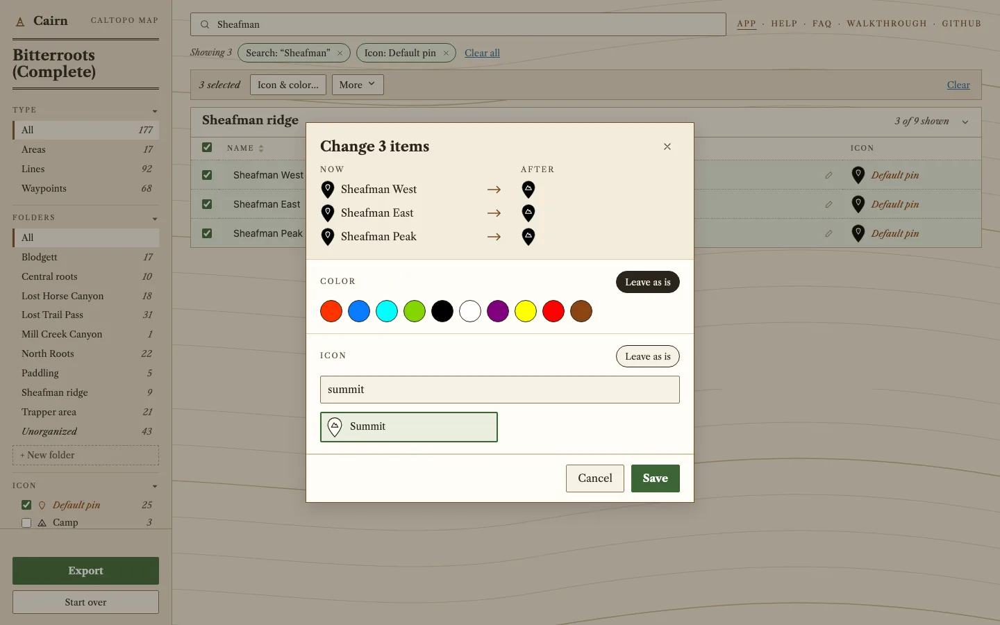
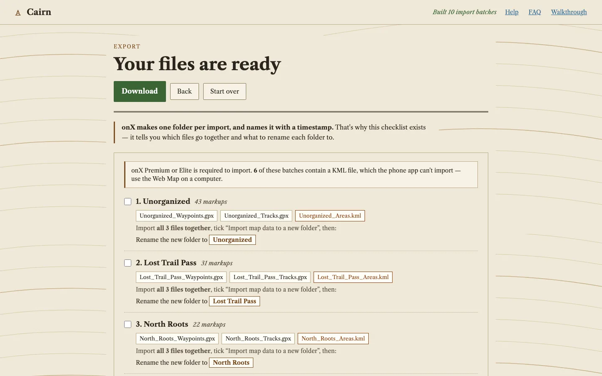

What Cairn changes between CalTopo and onX
This page follows one real map, the Bitterroots sample that ships with Cairn's tests, from a CalTopo export to a set of onX-ready files. Every Cairn screenshot below is the actual app, no mock-ups. The map has 177 markups in 10 folders: 68 waypoints, 92 lines and 17 areas.
- 68waypoints that a plain CalTopo GPX or KML export would hand to onX with no icon
- 43of those get a specific onX icon from Cairn right away, across 12 different icons
- 25fall back to the default pin and are flagged for you to review
- 10CalTopo folders, each turned into its own numbered import
Computed by loading the fixture in the real app and reading its data
(scripts/make_walkthrough_shots.py). "Would arrive with no icon" is the project's documented
behavior of CalTopo's GPX and KML export, not something measured on this specific map in onX.
What the plain export gives onX
onX Backcountry only imports GPX and KML. CalTopo's own export page says those two formats lose line and marker styles and folder organization. The one CalTopo export that keeps everything, GeoJSON, is the one onX can't open. Per the project's docs, a CalTopo GPX carries waypoint names and coordinates and little else.
| Carried by | CalTopo GPX / KML | CalTopo GeoJSON, through Cairn |
|---|---|---|
| Names and coordinates | Yes | Yes |
| Marker icons | No | Mapped to onX's 95 icons |
| Colors | No | Snapped to onX's palette |
| Folders | No | One numbered import each, plus a rename checklist |
| Notes | Not in the project's test GPX | Written to the description field |
Export from CalTopo as GeoJSON and add it to Cairn
One export, one file. Cairn runs entirely in your browser, so the map never leaves your computer.

.json or .geojson file.Your folders and icons survive the trip
The sample's 10 folders appear on the left with their counts, and every waypoint shows its onX icon name next to a drawing of the marker. Cairn matched 43 of the 68 waypoints to a specific icon, such as Parking (10), Climbing (9), Summit (6) and Shelter (4), from the CalTopo symbol or from words in the name. Hover any marker to see why it was chosen.

25 waypoints need a decision
When the CalTopo symbol is a plain point and the name gives no clue, Cairn doesn't guess. It marks the
waypoint Default pin. Here that is 22 plain points ("El Capitan", "Talus field", "Bridge") and 3 flags
that Cairn's mapping deliberately sends to the default pin. Ticking Default pin in the Icon list
shows only those.

One at a time, or many at once
Click a marker to change that one item's icon and color. Pick from onX's 95 icons or its 10 waypoint colors.

For a batch, search, tick the rows and choose Icon & color…. The dialog shows each item now and after. Here the three Sheafman ridge flags become Summits in one step, which takes the map from 25 flagged waypoints down to 22.

Ten imports, in order, with a checklist
onX makes one folder per import and names it with a timestamp, so Cairn gives you one set of files per CalTopo folder and a runbook saying which files go together and what to rename each new folder to. Lines go out as GPX tracks and areas as KML.

What this page can't show yet
- The onX side of the story hasn't been captured. The placeholders above stand in for it.
- What onX displays for a GPX waypoint with no onX icon hasn't been tested, so "no icon" describes the file, not what you will see in onX.
- Whether onX shows imported descriptions as Notes, and whether re-importing updates items or duplicates them, are open questions. The FAQ has the details.